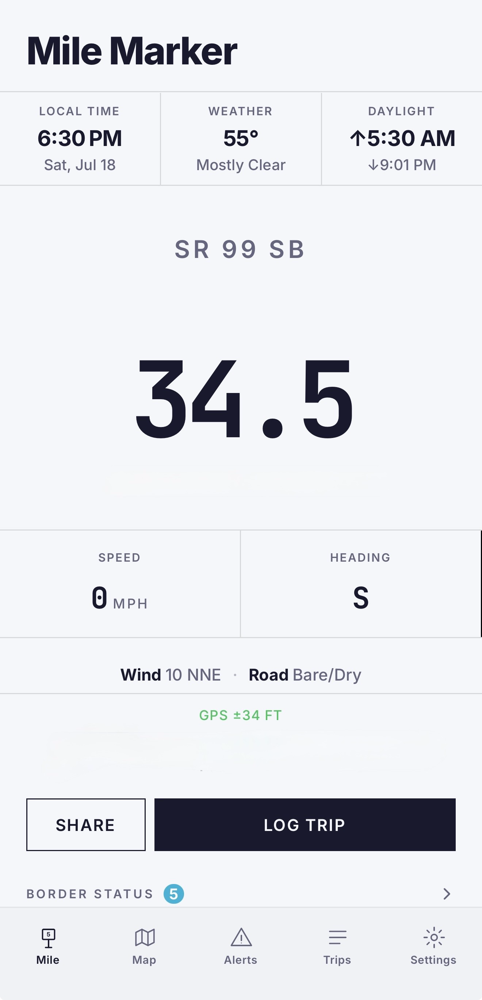
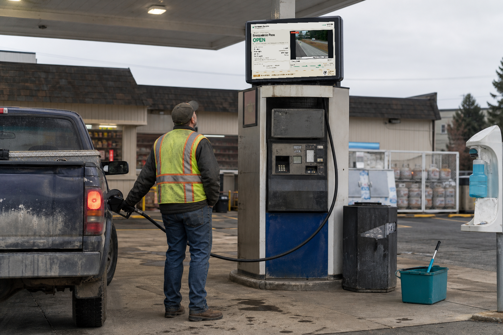

The easiest way to explain it is to just show you your own roads. Everything below is live right now — it updates every time you open this page.
This is a live map of the country around Elgin. Click any dot — green is a road camera and it'll show you the road this minute, red is a fire, orange is something happening on the highway.
Click one and the map will take you to it.
Loading…
This comes from the federal wildfire system — the same source the agencies use. Acres and crew counts are what they've officially reported.
Everything ODOT is reporting on I-84, OR-82, OR-204 and OR-244 — with the milepost, so you know exactly where.
Loading…
Those four above are just the closest ones to you. Here is the whole state on a map — every green dot is a camera, and you click one to see the road right now.
These all work on a computer, no app and no account needed. Bookmark whichever ones you like.
TripCheck is good, and I use their camera feed. But it only covers Oregon, and it makes you hunt around a map for what you want. You've told me you watch both Oregon and Washington — that's two different websites today.
| What you want | TripCheck | MileCheck |
|---|---|---|
| Oregon cameras | Yes | Yes |
| Washington cameras too | No — Oregon only | Yes, same page |
| Every other state | No | All 50 |
| Wildfires | No | Yes |
| Closures & crashes | Yes | Yes |
| Sorted by what's closest to you | You search the map | Nearest first |
| Works in the truck, no signal | No | Yes |
The real difference: everything above came from one place. Oregon's cameras, Washington's cameras, the federal fire system, and the state highway alerts — those are four separate government systems that don't talk to each other. I spent the last eight months writing the software that puts all fifty states into one.

Everything above works on a computer, which is how you'd use it. But there's also a phone version for people who are actually out driving — it shows the mile marker you're passing right now, those little green signs on the shoulder, down to the tenth of a mile.
That matters because it's the number 911 and a tow truck ask for. "I'm on I-84 somewhere past La Grande" is hard to find. "I-84 eastbound, milepost 265" is not.
It works with no cell service, because all fifty states are stored right on the phone.
This is the part I think you'll like. That same road information, put on a screen where drivers already stop — on the pump, or behind the counter.

That is a real screen showing the real board. The pass status, the camera, the travel time — all live, the same as what you saw at the top of this page. A person pumping gas stands there for four minutes with nothing to look at.
The gas station gets the screen for free and a cut of the advertising. Local businesses pay to be on it. And every screen has a code on it that people scan to get the app — so it advertises itself.
I have four of these built and running right now. I'm starting with stations before Snoqualmie Pass and up at the Canadian border, because that's where people actually stop to check conditions.
Three ways.
One: drivers pay $49.99 a year. That's the part that's running today.
Two: the gas station screens above — advertising revenue, split with the station.
Three — and this is the biggest one: trucking and logistics companies want this in their trucks. When a driver breaks down or hits a closure, the dispatcher needs to know exactly where they are. That's the same problem, except a company will pay far more than ten dollars a year to solve it for a whole fleet. It's already listed on a marketplace that reaches over four million commercial vehicles.
The people I hear from most are the ones who work on the road for a living — DOT crews and highway workers, in Oregon and in states I've never been to. They're the ones who live by mile markers all day, so they were the first to get it. Truck drivers, tow operators, and first responders after that.
Almost everything in the app is there because one of them asked for it.
I wrote a guide to how Oregon's mile markers actually work — where the numbering starts on each highway, why I-84's numbers run the way they do, and what the little green signs are really telling you.
Oregon mile marker guideHow the numbering works, highway by highway